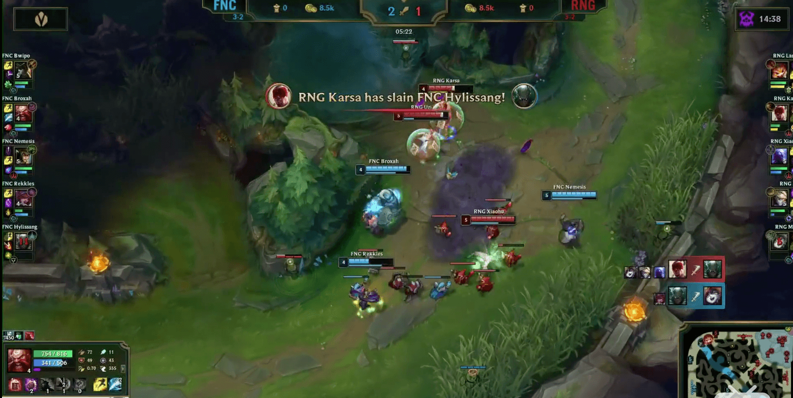

写在RNG S9出局后
RNG的16强出局，如果是在世界赛之前有人这么告诉我，相信大部分人是觉得是正常的，毕竟多次换上单始终不如人意，且在LPL的表现也是大家有目共睹的——上限不高。但是在小组赛第一轮那个差点赢SKT的RNG，让很多人开始相信这只战队能走到更远，我也是其中之一。第一轮的比赛向我们展示出狼行的铁男和纳尔玩的不错、小狗和卡萨状态极佳，观众们早早就把目标锁定到第二轮击败SKT上了。
如果就按照第一轮各队的实力与状态，RNG和SKT的比分应该是能与后面的队伍拉出一定的距离的，但是在第一局比赛开始，小虎的状态太差了，但是对面是faker，暂且相信之后会改观，但是这种状态似乎感染到了小明的加里奥，这是让我没想到的。得不了小组第一那就准备准备第二出线，但是在FNC打败SKT后，局势就尴尬起来。而下一场与CG的比赛更是让我有种不妙的感觉，小虎的阿卡丽再一次证明了其状态不佳，观众甚至一度感觉RNG会输给这只小组赛从未赢过的队伍。
很多人针对bp的ez说事，其实大家都能看出来霞真的是世界赛最强adc英雄了，为什么还会让欧成选到呢，因为FNC的小法师必须上ban位，连faker似乎都没办法的英雄，小虎也没办法。选ez就是要让uzi前中期压住这个霞，然后后面等瑞兹起来接管比赛。于是小明选择了露露，为了究极打线，但是这个意图太明显了，容错也太低了。酒桶的第一波抓下就很好的击中了RNG的七寸（其实我觉得如果第一波小明反应别太激烈，先不交闪现可能会更好，当然都是马后炮了），于是中路没净化的蛇女也不去抓了，都去下路帮忙。上路的纳尔狠狠的压着船长，但是得不到关爱来扩大优势，因为RNG需要首先保证下路优势，狼行自己的心里估计也是这样想的，唤不起想C的决心。而状态不好的小虎，在传送去下路的人群中带着卡萨送了一波，宣告着下路基本没了。

拿先锋的决策帮RNG止了口血，但是FNC是不会像CG一样给机会的，己方依旧站不起来的瑞兹，对方发育越来越爆炸爆炸的蛇女和霞，想有机会都难，接着便是慢性死亡时间。
RNG这6场小组赛可以看出，多年过去，uzi大赛状态依旧很好，心态也不错了，其实力至少在C组中独一档，奈何队友的状态的确不佳。不得不说，小虎的天使与瑞兹的确太混了。在国内的时候，卡萨和小明总是扛起节奏大旗的，小虎状态也还是不错的，就上路不大行需要大哥们带带。小虎的状态总是断断续续的，也许刚好在世界赛到达了状态的波谷地带，小明有点“被传染”，倒是狼行打得不卑不亢，然而打的不卑不亢不足以和卡萨一起扛起节奏大旗。于是只剩四个字——没有办法。
既然已经写到这里，比起rng状态不佳的选手，ig世界赛上乐言的表现真正令人难以启口。不多做分析只说下图这波，面对一个前期天使，我相信就是普通玩家也会尝试一下，后面还有rookie，为什么就不敢打呢？我想这么近的距离，q起手减速走过去a等天使交闪我跟e；或者直接闪现aq起手，天使闪就跟个e，后面rookie一套圣枪洗礼，天使怎么活的下来？

不过刚刚看见今天ning将首发，希望ig能好好努力夺得一号种子。
再回到RNG，距离大一刚进校不久的10月28日在东方体育中心看RNG打SKT的半决赛已经过去好久了，那一年的大家对RNG是遗憾中带着希望;去年10月20日打G2失利，大家对RNG是不解中带着愤懑;今年的10月20日，应该是无奈与遗憾了。要想真正改头换面，真就需要像SKT一样进行大换血，但是卡萨不知是否会继续签约，uzi也不知道是否还能继续上场。遗憾与无奈可能将是未来一段时间RNG的主基调。
题外话
RNG输掉比赛后难以入眠，避免去知乎、虎扑加入“战斗”，选择做做数学建模期中作业，最终于4点12分左右基本完成，这里贴出我的代码和简单的算法流程图，写的很垃圾，但仍希望对一些还没做的朋友们有一点点的帮助。
uzi，加油。